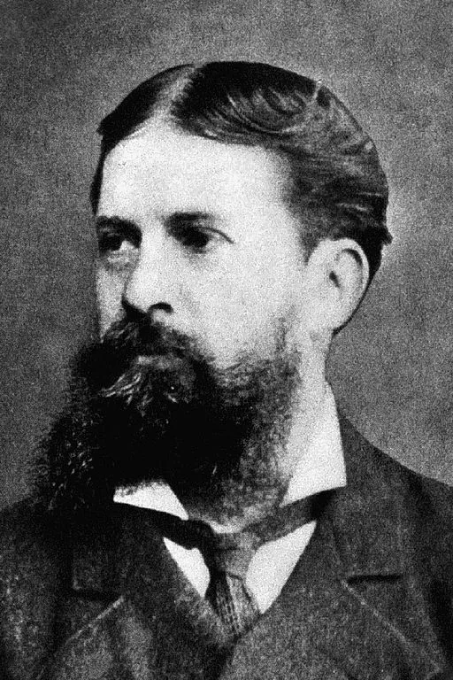

IX Jornadas ‘Peirce en Argentina’
Presentación

En este volumen se reúnen por orden alfabético las ponencias presentadas en las IX Jornadas “Peirce en Argentina”, Celebradas en la Academia Nacional de Ciencias de Buenos Aires los días 24 y 25 de agosto de 2023.
Agradecemos especialmente las conferencias de nuestros invitados: Sara Barrena, Jaime Nubiola y Paniel Reyes Cárdenas.
Este año retomamos nuestras Jornadas luego de la obligada interrupción de la pandemia del covid-19. El confinamiento preventivo y obligatorio que se decretó en nuestro país y en muchos otros del mundo, alteró significativamente nuestros planes y también nuestras vidas. Varios amigos, amigas y familiares no están hoy con nosotros. Es todo un acontecimiento poder recuperar este espacio que nos brinda la Academia Nacional de Ciencias de Buenos Aires y nos alegramos por ello.
En 2024 nuestras Jornadas cumplirán veinte años de edición. En mi opinión, es un gran logro para nuestra comunidad peirceana local, ya que muchas veces las iniciativas culturales surgen y se desvanecen tempranamente. Debemos agradecerle especialmente a Jaime Nubiola por su entusiasta apoyo de todos estos años, sin él estos 19 años de Jornadas no hubiesen sido posibles.
Me voy a permitir ahora contradecir el explícito deseo de Jaime de no recibir ningún homenaje por su reciente cumpleaños número setenta. Me hubiese gustado organizar estas Jornadas en su honor, como se estila en muchas universidades de otras latitudes. El se ha opuesto tenazmente a ello. Y ya sabemos lo que Peirce decía sobre la tenacidad. De todas maneras, creo yo que ser agradecidos es una virtud que no nos debe faltar. En efecto, no solo yo sino muchos estudiosos de Peirce en Hispanoamérica le debemos mucho a Jaime. Su solícita atención a la correspondencia y a las consultas, su generosidad para compartir bibliografía y sabiduría, además del ingente trabajo que ha desarrollado al frente del Grupo de Estudios Peirceanos de la Universidad de Navarra. Vienen ahora a mi memoria muchas personas que he encontrado a lo largo y a lo ancho de Latinoamérica que me han expresado la admiración que sienten por él y lo mucho que los ha ayudado en sus estudios. Por eso no sería justo comenzar estas Jornadas sin decirle a Jaime: ¡muchas gracias!
Quisiera también saludar muy especialmente a Sara Barrena, la flamante directora del Grupo de Estudios Peirceanos de Navarra, quien sin duda continuará la labor que tan eficazmente viene realizando el Grupo. Le deseamos mucho éxito en su gestión.
Es nuestra intención dar paso a nuevas generaciones de estudiosos de Peirce, brindando un lugar de encuentro amigable y favorable al eficaz intercambio intelectual, esperamos por eso que disfruten estos dos días de debates.
Agradezco al Grupo de Estudios Peirceanos de la Universidad de Navarra la ayuda brindada para la edición de este volumen y para la organización de las Jornadas.
Dra. Catalina Hynes
Coordinadora del Comité Organizador
Instituciones de procedencia de los participantes
- Centro de Estudios Filosóficos “Eugenio Pucciarelli” (CEF) — Argentina
- Consejo Nacional de Investigaciones Científicas y Técnicas (CONICET) — Argentina
- Forbes Argentina
- Grupo de Estudios Peirceanos — España; Argentina
- Grupo Investigación<>Psicoanálisis — Argentina
- Instituto Federal de Educação, Ciência e Tecnologia de São Paulo — Brasil
- Instituto Interdisciplinario de Economía política (IIEP) — Argentina
- Oblate School of Theology (USA)
- Sociedad Latinoamericana Peirce (SLP)
- Universidad de Antioquia — Colombia
- Universidad de Caldas — Colombia
- Universidad de Chile
- Universidad de Navarra (UNAV) — España
- Universidad de Salamanca (USAL) — España
- Universidad de Valparaíso (UV) — Chile
- Universidad FASTA (UFASTA) — Argentina
- Universidad Nacional de Buenos Aires (UBA)
- Universidad Nacional de Colombia
- Universidad Nacional de Córdoba (UNC) — Argentina
- Universidad Nacional de La Plata (UNLP) — Argentina
- Universidad Nacional de Lanús (UNLa) — Argentina
- Universidad Nacional de Mar del Plata (UNMdP) — Argentina
- Universidad Nacional de Tucumán (UNT) — Argentina
- Universidad Nacional de Villa María (UNVM) — Argentina
- Universidad Popular Autónoma del Estado de Puebla (UPAEP) — México
- Universidad Tecnológica Metropolitana — Chile
Esta página es distribuida por la Universidad de Navarra y el GEP https://www.unav.es/gep/